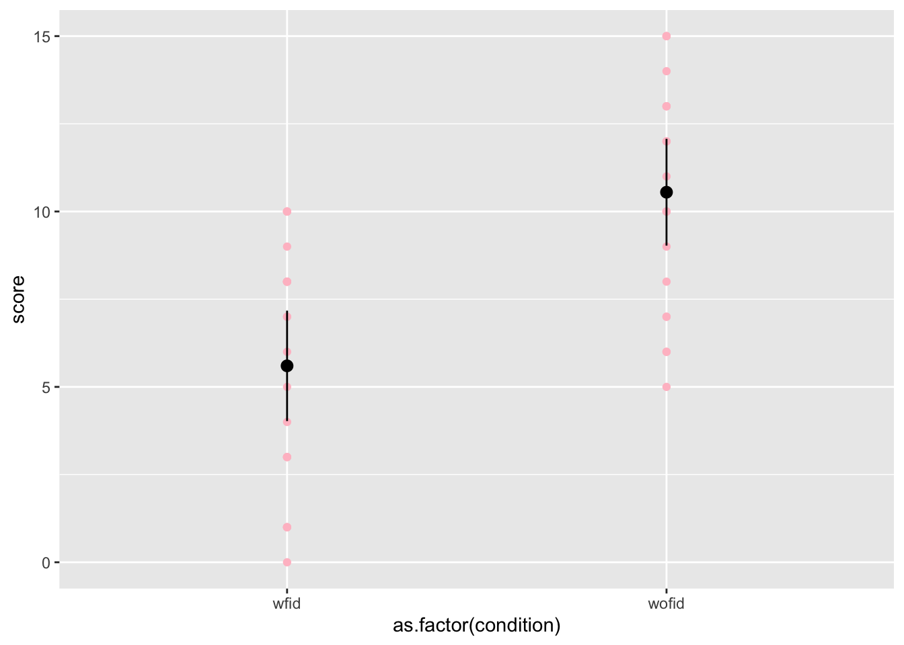

Chapter 9 Estimating the difference between dependent group means
9.1 Research question
Do fidget spinners help you concentrate? Soares and Storm (2019) asked college-aged students to watch an educational video with and without a fidget spinner. They found that participants remembered more information about the video they watched without the fidget spinner than the video they watched with it.
9.2 Method
Imagine you replicated Soares and Storm (2019) with a convenience sample of 20 classmates and friends. Participants watched two educational videos about lesser known historical figures. Each video was about 10 minutes. Participants were run individually.
The order of the conditions was counterbalanced across participants so that half of the participants were given the fidget spinner while watching the first video and not the second video. The other half of the participants watched the first video without the fidget spinner and were given the fidget spinner for the second video.
After each video participants completed an unrelated task for 5 minutes and then were given a 15 item fill in the blank test about the video content.
9.3 Data analysis
9.3.1 Open data and load the neccessary packages.
Then open the data, which is in fidget.csv on D2L.
After you load it into your RStudio cloud project, open the data with the IMPORT DATASET point and click method, or with this code:
Then load the tidyverse and psych packages with this code:
Note the layout of the data here. Let’s use the head() function to look at the first 3 rows of the dataset:
## # A tibble: 3 x 3
## id wofid wfid
## <dbl> <dbl> <dbl>
## 1 1 6 3
## 2 2 15 4
## 3 3 9 3Remember that in a spreadsheet, each row typically represents an individual participant in the study. So, with a within subject design, the IV data will be split into to different columns. In this example the wfid is the test scores for the video watched with the fidget spinner and the wofid is the test scores for the video watched without the fidget spinner.
A column with the difference between the two levels of the IV is needed for within subject data analysis. So, let’s create it now using the mutate() function (which is part of the tidyverse package)
## # A tibble: 3 x 4
## id wofid wfid diff
## <dbl> <dbl> <dbl> <dbl>
## 1 1 6 3 3
## 2 2 15 4 11
## 3 3 9 3 6The first participant scored a 6 on the test about the video he/she watched without the fidget spinner and a 3 on the test of the video watched with the fidget spinner. The difference between the scores is 3 points.
9.3.2 Descriptive statistics and assumptions
Let’s first compute measures of central tendency and variability.
## vars n mean sd median trimmed mad min max range skew kurtosis se
## wofid 1 20 10.55 3.25 10.5 10.62 3.71 5 15 10 -0.17 -1.39 0.73
## wfid 2 20 5.60 3.36 6.5 5.69 4.45 0 10 10 -0.22 -1.49 0.75Interpretation
We can see that the participants in the without fidget spinner condition got an average of 10.55 questions correct (SD = 3.25, range = 5 - 15), while the participants in the with fidget spinner condition got an average of 5.60 questions correct (SD = 3.36, range = 0 - 10). The results show that the minimum and maximum values are all within the range of possible values.
Next test the normality of the difference scores with a Shapiro-Wilk test:
##
## Shapiro-Wilk normality test
##
## data: fidex$diff
## W = 0.97287, p-value = 0.8139A significant test of normality (Shapiro-Wilk test) indicates that the data is not normally distributed. With non-normal data, a Paired Samples Wilcoxon test should be used, which is a nonparametric alternative to the related-sample t-test.
In this example, the test of equality of variance is nonsignificant. This means that in the next step you should use a Student’s related sample t-test, which assumes that the difference scores are normally distributed.
9.3.3 Stats
Use the t-test function to find the CI and NHST with this base R code:
t.test(fidex$wofid, fidex$wfid, paired = TRUE)
* The within-subjects t-test uses the same t.test() function as you did with independent samples. However, this time you have to use the form of: level1, level2
* I also think you have to direct R to the variable with the $ method (I could not get this to run with the data = )
* The paired=TRUE tells T that it is a within subjects design
Here are the results:
##
## Paired t-test
##
## data: fidex$wofid and fidex$wfid
## t = 5.0789, df = 19, p-value = 6.667e-05
## alternative hypothesis: true difference in means is not equal to 0
## 95 percent confidence interval:
## 2.910114 6.989886
## sample estimates:
## mean of the differences
## 4.95Interpretation
The results show that the 95% CI is 2.910114 to 6.989886, which means that the true difference in the number of correct test questions remembered based on fidget spinner use is likely to be between about 3 and 7 correct questions.
The results also report that t = 5.0789, df = 19, p-value = 6.667e-05 - so the difference is statistically significant.
Next find the effect size using the effsize package. Here is the code:
library(effsize)
cohen.d(fidex$wofid, fidex$wfid, paired=TRUE)
- Again, with within-subjects the cohens.d function takes the form of: level1, level2
- The
paired=TRUEtells r that it is a within subjects design
##
## Attaching package: 'effsize'## The following object is masked from 'package:psych':
##
## cohen.d##
## Cohen's d
##
## d estimate: 1.496451 (large)
## 95 percent confidence interval:
## lower upper
## 0.6280516 2.3648508Interpretation
The effect size is 1.496451, which is large. The 95% CI is 0.6280516 to 2.3648508, suggesting there is a high level of uncertainty in the size of the effect here.
9.3.4 5. APA-style write up
Participants remembered more information about the video they watched without the fidget spinner (M = 10.50, SD = 3.25) compared to the video that they watch with the fidget spinner (M = 5.60, SD = 3.36).
Therefore, the average difference in the number of correct test questions between the groups was 4.9 questions. The 95%CI on this difference was 2.91 to 6.99 correct questions. This CI means that the true difference in the number of correct test questions remembered based fidget spinner use is likely to be between about 3 and 7 correct questions.
The standardized effect size of the difference between test score without and with fidget spinners was d = 1.50 (CI.95: 0.63 to 2.36). This effect would be classified by Cohen’s conventions as large.
These 95%CIs do not contain zero, so we can conclude that the difference between the two conditions is statistically significant (t(19) = 5.08, p < .001).
9.3.5 Scatterplots
You may have noticed that we did not create a scatterplot during this example. I would like to talk about why…
Within subject data can actually take two organizational formats. The data we were just working with above was in wide format, which means that a participant’s responses will all be in a single row, and each response is in a separate column.
The another option is call long format. Instead of having every row represent an individual participant, each row is one time point per subject.
Dplyr (of tidyverse) turns wide data into long data. Here is the code we will use:
## # A tibble: 6 x 4
## id diff condition score
## <dbl> <dbl> <chr> <dbl>
## 1 1 3 wfid 3
## 2 2 11 wfid 4
## 3 3 6 wfid 3
## 4 4 3 wfid 3
## 5 5 10 wfid 0
## 6 6 7 wfid 8- fidexlong <- fidex saves the work so we can use it. I chose to save this in a new dataset in case I fuck it up.
- More detail on the the
gather()function:- In the
key =put the name of the repeated measures. So here it is"condition"because the IV is a condition (fidget spinner and no fidget spinner). Note that we could have an a within subject association claim where one variable is time (time 1 and time 2). Here you should have: key = “time”
- In the
value =put the name of the variable that was measured multiple times. In the present example is thescoreof the test of educational video content knowledge. +wfid:wofidis the columns that need to be rearranged. The columns with the data in it.
- In the
After you create the new dataset, note that there are now two rows for each ID number: one for test score with the fidget spinner and one for the test score without the fidget spinner. If you ran this code with the dataset that you mutated by creating the difference score, both the ID and difference scores will be repeating. (You may need to sort the subids using the little arrows in the data view to see the two rows easily.)
Once we format the data as long instead of wide, we can use ggplots to look at the spread of means and individuals datapoints:
ggplot(fidexlong, aes(x = as.factor(condition), y = score)) +
geom_point(color = "pink") +
stat_summary(fun.data = mean_cl_normal)